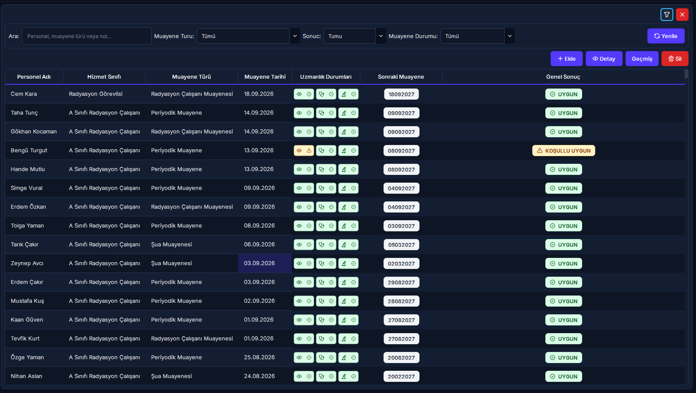

Sağlık Muayeneleri ve Periyodik Takip
Radyasyon çalışanlarının işe giriş ve periyodik sağlık gözetimini 2 aşamalı klinik iş akışı (Ön Hazırlık ve Sevk ile Hekim Kararı ve Arşivleme), 13.04.2023 / 32162 sayılı Yönetmelik EK-1 uyumlu iki sayfalık A4 PDF sevk belgesi, 3 uzmanlık branşı değerlendirmesi, 30 gün erken uyarısı ve şifreli evrak kasası ile yönetmenizi sağlar.
Kısa Reçete: Ön Hazırlık Sevk ve Hekim Kararı Akışı
Personelin periyodik veya Şua muayenelerinin zamanında sevk edilmesi, resmi EK-1 formunun üretilmesi ve poliklinik kararlarının şifreli kasada arşivlenmesi.
[Yeni Sevk Başlat] ile maruziyet, anamnez ve 12 EK-1 belirtisini kaydedip [EK-1 Formu (A4)] belgesini yazdırın; Göz, Dahiliye ve Dermatoloji sonuçları döndüğünde [Hekim Kararı] ekranından branş bulgularını, kaşe onaylarını ve taranmış imzalı raporu kaydedin.
Sevk anında hekim ve çalışana bildirim gider; Muayene Türüne göre 6 veya 12 aylık sonraki kontrol tarihi otomatik önerilir; süreye 30 gün kala sarı, süre dolduğunda kırmızı uyarı verilir.
5N1K Kural ve Arayüz Çözümleme Tablosu
İki aşamalı klinik muayene süreci, resmi EK-1 belgesi, periyot hesabı ve heyet kısıt ayrımı kuralları.
Kritik Sahada Yanlış Bilinen Kurallar (Mit Avcısı)
Süreç Akış Şeması
Çalışamaz mı?"} -->|Evet| K["Modül 07: Çalışma & Nöbet Muafiyeti"] J -->|Hayır| L["Ara Kontrol ile Yakın Takip"] H & K & L --> M(["Islak İmzalı EK-1 Şifreli Kasaya Arşivlenir"]) end D ==> E H & I ==> J
- Ön Hazırlık ve Sevk: Çalışan maruziyeti, anamnez ve 12 EK-1 belirtisi girilerek sevk açılır; 2. sayfası boş bırakılmış resmi EK-1 A4 PDF sevk belgesi üretilir ve bildirim gönderilir.
- Poliklinik ve Hekim Kararı: Göz, Dahiliye ve Dermatoloji branşlarının bulguları, hekim kaşe onayları ve genel uygunluk kanaati işlenir; gerekirse sonraki muayene tarihi erkene çekilebilir.
- Heyet Kısıtı ve Arşivleme: Yalnızca resmi Sağlık Kurulu raporuyla kesinleşen engeller Modül 07 çalışma kısıtlarına aktarılır; ıslak imzalı EK-1 taraması şifreli evrak kasasında saklanır.
Arayüz Ekran Görünümleri


Adım Adım İşlem Rehberi
1. Yeni Sevk Başlatma ve Resmi EK-1 A4 Formunu Üretme (1. Aşama)
- Sol menüden [Sağlık Muayeneleri] ekranını açın ve araç çubuğundaki [Yeni Sevk Başlat] butonuna tıklayın.
- İlk sayfada personeli, muayene türünü (İşe Giriş, Radyasyon Çalışanı, Periyodik veya 6 aylık Şua Muayenesi), radyasyon maruziyet tipini ve son 1 yıllık anamnez sorularını seçip [İleri: Belirtiler] butonuna basın.
- 12 maddelik EK-1 öznel belirti taramasını doldurun (sorun yoksa [Tümünü 'YOK' Olarak İşaretle] kullanabilirsiniz), gerekiyorsa [Matbu EK-1 Sevk Formu Yazdır] ile çıktıyı alın ve [Sevki Başlat ve Kaydet] butonuna tıklayın (sonradan liste üzerinden [EK-1 Formu (A4)] ile de indirebilirsiniz).
2. Poliklinik Sonuçlarını ve Hekim Kararını Kaydetme (2. Aşama)
- Poliklinik muayenelerinden kaşeli EK-1 formu döndüğünde ilgili satırı seçip [Hekim Kararı] butonuna tıklayın (istersek [Ön Hazırlık / Sevk Verilerini Gör] ile ilk beyana göz atabilirsiniz).
- Dahiliye, Göz ve Dermatoloji bölümlerine branş sonuçlarını girin ve tamamlanan branşlar için [Hekim Kaşesi ve İmzası Var] kutularını işaretleyin (en az bir branş sonucu seçili olmalıdır).
- Genel muayene kararını (Uygun, Koşullu Uygun veya Uygun Değil), hekim tavsiyelerini ve gerekirse manuel erkene çekilmiş Sonraki Muayene Tarihi alanını kontrol edin; taranmış ıslak imzalı belgeyi [Seç] ile ekleyip [Muayeneyi Onayla ve Kapat] butonuna basın.
3. Geçmiş İnceleme, Revizyon Takibi ve Web Portalı Görünümü
- Bir çalışanın önceki yıllardaki tüm muayene kayıtlarını karşılaştırmak için satırı seçip [Geçmiş] butonuna tıklayın; güncellenen veya silinen kayıtların eski durumlarını görmek için tabloda satıra sağ tıklayıp Değişiklik Geçmişi seçeneğini açın.
- Web Portalı Sağlık Ekranı: Çalışanlar kendi sağlık karnelerinden sonraki kontrol gün sayısını ve sevk bildirimlerini takip ederken, EK-1 çalışan beyanı ön formunu tarayıcıdan doldurabilir; yöneticiler ise Sağlık Dashboard üzerinden branş dağılımını, muayene uyum yüzdesini ve aylık yığılma tahminini izler.
Sıkça Sorulan Sorular (SSS)
Bir muayenede "Uygun Değil" seçildiğinde personel hemen nöbetten çıkarılır mı?
Hayır. Buradaki değerlendirme rutin klinik gözetim kaydıdır. Uygun Değil kanaati personelin ilgili branş kliniğine ileri tetkik için sevk edilmesini sağlar; çalışamayacağı resmi Sağlık Kurulu Heyet Raporu ile kesinleştiğinde nöbet ve çalışma muafiyeti Modül 07 üzerinden uygulanır.
Üç branş (Göz, Dahiliye, Cilt) aynı gün tamamlanamazsa kaydı bekletmek zorunda mıyım?
Hayır. En az bir branş sonucunun girilmiş olması kaydı oluşturmak için yeterlidir. Diğer poliklinik sonuçları geldikçe ilgili satırı [Hekim Kararı] üzerinden açıp güncelleyebilirsiniz.
Sistem sonraki muayene tarihini 12 ay sonraya attı; hekim 3 ay sonraya ara kontrol isterse değiştirebilir mi?
Evet. Sistem muayene türüne göre 6 veya 12 aylık varsayılan tarihi otomatik önerir; ancak hekimin tavsiyesi doğrultusunda sonraki muayene tarihi alanı manuel olarak daha erken bir güne çekilebilir.
Silinmiş veya sonradan değiştirilmiş bir sağlık muayenesini denetimde nasıl kanıtlarım?
Muayene listesinde satıra sağ tıklayıp Değişiklik Geçmişi menüsünü açtığınızda, kaydın önceki verileri, işlemi yapan kullanıcı adı ve kesin tarih/saat damgası değiştirilemez denetim izi olarak listelenir.